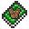
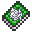

| Armor of Earth |  |
| Gust | |
| Jade Staff |  |
| Locate Ores | |
| Nature's Blessing | |
| Touch of Life |  |
| Nature's Wrath Verdant Wizards Only |
Verdant is the class of nature. Verdant spells deal with plant growth, and changing the world with natural forces.
Below is a list of Verdant spells, click a spell's icon for more information about the spell.
|